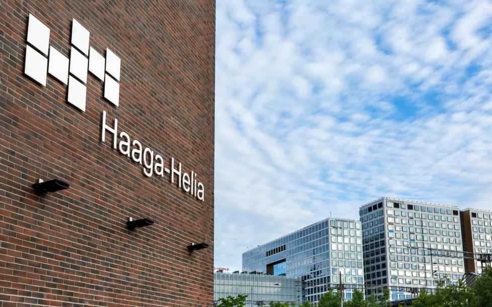

Welcome to My Portfolio!
Hi, I’m Niroj Gautam, an aspiring tech professional passionate about creating innovative web solutions. Explore my work and skills below!
Get to know more about me:

My Studies
Currently I am studying ITBBA at Haaga-Helia University of applied sciences and I am planning to major in Software development or cloud infrastructure as a major. My personal goal is to be a life long learner and achieve new skills along the way!
Haaga-Helia WebsiteExplore My Projects
Check out my portfolio to see more about my past history and my current projects and other exciting things about the future and some of th accomplishments I have done in my life. Stay tuned for more updates!
Explore more projects here